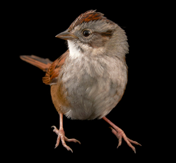

Vrabiuța - Frecvența apariției hashtag-urilor pe Twitter

John Horton Conway (26 Decembrie 1937 - 11 Aprilie 2020) a fost un matematician britanic cu un spectru de cercetări extrem de larg,
cunoscut în special pentru invenția automatului celular numit Game of Life. Ca în multe alte situații, Conway ar fi preferat să devină celebru pentru aproape oricare
dintre descoperirile sale matematice "serioase" și nu pentru Game of Life pe care l-a considerat mai degrabă o joacă, nedemnă de denumirea de "descoperire matematică".
John Horton Conway a murit pe 11 Aprilie, la vârsta de 82 de ani, la 4 zile dupa apariția simptomelor datorate prezenței COVID-19.
John Horton Conway a murit pe 11 Aprilie, la vârsta de 82 de ani, la 4 zile dupa apariția simptomelor datorate prezenței COVID-19.
"I do have a big ego! As I often say, modesty is my only vice. If I weren't so modest, I'd be perfect"
John Horton Conway
John Horton Conway
Lansează Vrabiuța